Ageing hypothalamic astrocytes to separate nuclei transfer
Evgenii Tretiakov
Last updated: 2022-12-16
Checks: 6 1
Knit directory: 1_heteroAstrocytes/
This reproducible R Markdown analysis was created with workflowr (version 1.7.0). The Checks tab describes the reproducibility checks that were applied when the results were created. The Past versions tab lists the development history.
The R Markdown is untracked by Git. To know which version of the R
Markdown file created these results, you’ll want to first commit it to
the Git repo. If you’re still working on the analysis, you can ignore
this warning. When you’re finished, you can run
wflow_publish to commit the R Markdown file and build the
HTML.
Great job! The global environment was empty. Objects defined in the global environment can affect the analysis in your R Markdown file in unknown ways. For reproduciblity it’s best to always run the code in an empty environment.
The command set.seed(20220624) was run prior to running
the code in the R Markdown file. Setting a seed ensures that any results
that rely on randomness, e.g. subsampling or permutations, are
reproducible.
Great job! Recording the operating system, R version, and package versions is critical for reproducibility.
Nice! There were no cached chunks for this analysis, so you can be confident that you successfully produced the results during this run.
Great job! Using relative paths to the files within your workflowr project makes it easier to run your code on other machines.
Great! You are using Git for version control. Tracking code development and connecting the code version to the results is critical for reproducibility.
The results in this page were generated with repository version 1cfad7d. See the Past versions tab to see a history of the changes made to the R Markdown and HTML files.
Note that you need to be careful to ensure that all relevant files for
the analysis have been committed to Git prior to generating the results
(you can use wflow_publish or
wflow_git_commit). workflowr only checks the R Markdown
file, but you know if there are other scripts or data files that it
depends on. Below is the status of the Git repository when the results
were generated:
Ignored files:
Ignored: .Rhistory
Ignored: .Rproj.user/
Ignored: analysis/.Rhistory
Ignored: analysis/figure/
Ignored: data/comb_astrocytes.bak.h5Seurat
Ignored: data/comb_astrocytes.bak.h5ad
Ignored: data/deng2019_arc_chow.h5Seurat
Ignored: data/deng2019_arc_chow.h5ad
Ignored: data/deng2019_arc_chow_astrocytes.h5Seurat
Ignored: data/deng2019_arc_chow_astrocytes.h5ad
Ignored: data/deng2019_arc_chow_astrocytes_fin.h5Seurat
Ignored: data/deng2019_arc_chow_astrocytes_fin.h5ad
Ignored: data/deng2019_arc_chow_clusters.h5Seurat
Ignored: data/deng2019_arc_chow_clusters.h5ad
Ignored: data/deng2019_arc_hfd.h5Seurat
Ignored: data/deng2019_arc_hfd.h5ad
Ignored: data/deng2019_arc_hfd_astrocytes.h5Seurat
Ignored: data/deng2019_arc_hfd_astrocytes.h5ad
Ignored: data/deng2019_arc_hfd_astrocytes_fin.h5Seurat
Ignored: data/deng2019_arc_hfd_astrocytes_fin.h5ad
Ignored: data/deng2019_arc_hfd_clusters.h5Seurat
Ignored: data/deng2019_arc_hfd_clusters.h5ad
Ignored: data/deng2019_arc_refi_astrocytes.h5Seurat
Ignored: data/deng2019_arc_refi_astrocytes.h5ad
Ignored: data/deng_2020_arc_chow.h5Seurat
Ignored: data/deng_2020_arc_chow.h5ad
Ignored: data/deng_2020_arc_chow_astro-npy-pomc.h5Seurat
Ignored: data/deng_2020_arc_chow_astro-npy-pomc.h5ad
Ignored: data/deng_2020_arc_chow_astrocytes.h5Seurat
Ignored: data/deng_2020_arc_chow_astrocytes.h5ad
Ignored: data/deng_2020_arc_chow_astrocytes_fin.h5Seurat
Ignored: data/deng_2020_arc_chow_astrocytes_fin.h5ad
Ignored: data/deng_2020_arc_chow_clusters.h5Seurat
Ignored: data/deng_2020_arc_chow_clusters.h5ad
Ignored: data/deng_2020_arc_hfd.h5Seurat
Ignored: data/deng_2020_arc_hfd.h5ad
Ignored: data/deng_2020_arc_hfd_astrocytes.h5Seurat
Ignored: data/deng_2020_arc_hfd_astrocytes.h5ad
Ignored: data/deng_2020_arc_hfd_astrocytes_fin.h5Seurat
Ignored: data/deng_2020_arc_hfd_astrocytes_fin.h5ad
Ignored: data/deng_2020_arc_hfd_clusters.h5Seurat
Ignored: data/deng_2020_arc_hfd_clusters.h5ad
Ignored: data/deng_2020_arc_refi_astrocytes.h5Seurat
Ignored: data/deng_2020_arc_refi_astrocytes.h5ad
Untracked files:
Untracked: analysis/.ipynb_checkpoints/
Untracked: analysis/2022-11-16_pr.Rmd
Untracked: analysis/2022-11-16_pr2.Rmd
Untracked: analysis/2022-11-23_pr.Rmd
Untracked: analysis/2022-11-24_pr.Rmd
Untracked: analysis/2022-11-25_pr.qmd
Untracked: analysis/2022-12-12_pr.Rmd
Untracked: analysis/deng2020_norm_ligrec.pickle
Untracked: analysis/normalised.ipynb
Untracked: data/astrocyte_enriched_genes_shared_by_mice.tsv
Untracked: data/housekeeping_mouse.tsv
Untracked: data/top_astrocytes_progenitor_cells_genes_by_humans.tsv
Untracked: data/top_mature_astrocyte_genes_by_humans.tsv
Untracked: output/figures/
Untracked: output/tables/ageing_astr_k9-mrk_logreg-sct.csv
Untracked: output/tables/ageing_astr_k9-mrk_roc-sct.csv
Untracked: output/tables/ageing_astr_recon-fix-mrk_logreg-sct.csv
Untracked: output/tables/ageing_astr_recon-fix-mrk_roc-sct.csv
Untracked: output/tables/ageing_astr_recon-mrk_logreg-sct.csv
Untracked: output/tables/ageing_astr_recon-mrk_roc-sct.csv
Untracked: output/tables/astr_k17-mrk_wilcox-sct.csv
Untracked: output/tables/astr_reg-mrk_logreg-sct-notintegrated.csv
Untracked: output/tables/astr_reg-mrk_roc-sct-notintegrated.csv
Untracked: output/tables/genes-meta_astroMap-all.tsv
Untracked: output/tables/genes_astroMap-all.tsv
Untracked: output/tables/novoseq-ageing_astr_recon-fix-mrk_logreg-sct.csv
Untracked: output/tables/novoseq-ageing_astr_recon-fix-mrk_mast-sct.csv
Untracked: output/tables/novoseq-ageing_astr_recon-fix-mrk_roc-sct.csv
Unstaged changes:
Modified: analysis/hfd.Rmd
Modified: code/genes.R
Modified: output/tables/arc_ast.csv
Note that any generated files, e.g. HTML, png, CSS, etc., are not included in this status report because it is ok for generated content to have uncommitted changes.
There are no past versions. Publish this analysis with
wflow_publish() to start tracking its development.
genes.embed <- c("Ndrg2", "Slc1a3", "Gfap",
"S100b", "Agt", "Slc6a11",
"Aqp4", "Nfia", "Aldoc",
"Apoe", "Aldh1l1", "Sox9",
"Fgfr3", "Egfr", "Ntrk2", "Gja1")
genes.nature <- c("Ndrg2", "Aqp4", "Gja1",
"Slc17a9", "Slc17a7", "Slc17a6",
"Slc16a1", "Slc16a7", "Slc16a3",
"Panx1", "P2rx7", "Srr",
"Dao", "Vamp2", "Gab1",
"Slc18a1", "Slc18a2", "Slc18a3",
"Slc17a5", "Osmr", "S100a6",
"Ogn", "Itih5", "Rdh10",
"Fst", "1500015O10Rik", "Rnf13",
"A2m", "Rsph9", "Galnt16",
"Rad23b", "Tgfbr2", "Ppp1r15a",
"Mlc1", "Slc6a11", "Slc1a3", "S100b",
"S100b", "Fabp7", "Gab1", "Igfbp5",
"Hopx", "Igsf1", "Tgfb2", "2810459M11Rik",
"Rnf13", "Itih5", "Slc1a2", "Cd59a",
"Vim", "Slc7a10", "Fos")
genes.jj <- c(
"Acsbg1", "Acsl3", "Actb", "Agt", "Aldh1l1", "Aldoc", "Apoe",
"Aqp4", "Atp1a2", "Bmpr1b", "Cbs", "Ckb", "Clu", "Cnx43",
"Cpe", "Cst3", "Cth", "Cyp4f14", "Dbi", "Dbx2", "Dctd",
"Dio2", "Ednrb", "Fgfr3", "Gabbr1", "Gabbr2", "Gjb6", "Gli3",
"Gm266", "Gpr37l1", "Grhl1", "Grm3", "Gs", "Gucy2c", "Hapln1",
"Hes5", "Heyl", "Hgf", "Id2", "Itih3", "Lars2", "Lcat",
"Ldhb", "Malat1", "Mc3r", "Mfge8", "Mlc1", "Mmd2", "Mt1",
"Mt2", "Ndrg2", "Nfia", "Npas3", "Nrxn1", "Ntrk2", "Ntsr2",
"Olx1", "Otx2", "Pax6", "Pbxip1", "Phkg1", "Pla2g3", "Pla2g7",
"Plcd4", "Plce1", "Plp1", "Ppap2b", "Ppia", "Prodh", "Ptprz1",
"Rfx4", "Rpl41", "S1pr1", "Scd2", "Serpinb1c", "Slc19a3", "Slc1a2",
"Slc1a3", "Slc39a12", "Slc4a4", "Slc6a11", "Son", "Sox2", "Sox9",
"Sparc", "Sparcl1", "Tlr3"
)
genes.anatomy.jj <- c("Gfap", "Meg3", "Snhg11", "Ttc3", "Cst3", "Sparcl1",
"Ndrg2", "Cnx43", "Agt", "S100b", "Aldh1l1", "Lxn",
"Aqp4", "Slc1a2", "Fabp7", "Glul", "Olig2")
# public resources:
housekeeping_mouse <-
read_lines(file = here(data_dir, 'housekeeping_mouse.tsv'))
astroenriched_mouse <-
read_lines(file = here(data_dir, 'astrocyte_enriched_genes_shared_by_mice.tsv'))
astroprogenitor_humans <-
read_lines(file = here(data_dir, 'top_astrocytes_progenitor_cells_genes_by_humans.tsv')) |>
str_to_sentence()
astromature_humans <-
read_lines(file = here(data_dir, 'top_mature_astrocyte_genes_by_humans.tsv')) |>
str_to_sentence()
# aggregate:
genes.manual <- unique(c(genes.embed, genes.nature,
genes.jj, genes.anatomy.jj,
astroenriched_mouse,
astromature_humans,
astroprogenitor_humans))
# ROC-test markers
srt.markers.roc <- read_csv(file = here(tables_dir,
'ageing_astr_recon-mrk_roc-sct.csv'))
srt.markers.roc %>%
group_by(cluster) %>%
slice_max(n = 3, order_by = avg_log2FC)# A tibble: 9 × 8
# Groups: cluster [3]
myAUC avg_diff power avg_log2FC pct.1 pct.2 cluster gene
<dbl> <dbl> <dbl> <dbl> <dbl> <dbl> <dbl> <chr>
1 0.878 1.82 0.756 2.63 0.929 0.357 5 mt-Co2
2 0.871 1.73 0.742 2.50 0.889 0.316 5 mt-Cytb
3 0.856 1.70 0.712 2.45 0.856 0.324 5 mt-Nd1
4 0.72 2.21 0.44 3.18 0.615 0.189 8 Gfap
5 0.783 1.76 0.566 2.54 0.784 0.357 8 Scd2
6 0.715 1.75 0.43 2.53 0.692 0.353 8 Aqp4
7 0.736 1.33 0.472 1.92 0.617 0.24 10 Xrcc5
8 0.736 1.08 0.472 1.56 0.543 0.228 10 Gm13266
9 0.701 0.868 0.402 1.25 0.58 0.24 10 2610001J05Rikgene_list_plot <-
Extract_Top_Markers(marker_dataframe = srt.markers.roc,
num_genes = 3,
rank_by = "avg_log2FC",
make_unique = TRUE,
named_vector = FALSE)
# LR-test markers
srt.markers.lr <- read_csv(file = here(tables_dir,
'ageing_astr_recon-mrk_logreg-sct.csv'))
srt.markers.lr %>%
group_by(cluster) %>%
slice_max(n = 3, order_by = avg_log2FC)# A tibble: 23 × 7
# Groups: cluster [9]
p_val avg_log2FC pct.1 pct.2 p_val_adj cluster gene
<dbl> <dbl> <dbl> <dbl> <dbl> <dbl> <chr>
1 1.84e- 72 1.91 0.6 0.246 6.42e- 69 1 Aldh1a1
2 1.41e- 24 1.62 0.407 0.223 4.95e- 21 1 Esrrg
3 1.24e- 21 1.38 0.445 0.276 4.32e- 18 1 Kcnq3
4 5.25e- 19 0.920 0.476 0.294 1.84e- 15 2 Tnfaip8
5 1.98e- 15 0.810 0.393 0.229 6.94e- 12 2 Sgcd
6 2.07e- 32 2.05 0.575 0.421 7.25e- 29 3 Tspan7
7 6.85e- 70 1.87 0.575 0.256 2.40e- 66 3 Slit2
8 8.72e- 51 1.86 0.514 0.164 3.05e- 47 3 Pdzph1
9 3.78e- 3 0.326 0.505 0.333 1 e+ 0 4 Pcif1
10 2.81e-192 2.63 0.929 0.357 9.84e-189 5 mt-Co2
# … with 13 more rowsgene_list_plot2 <-
Extract_Top_Markers(marker_dataframe = srt.markers.lr,
num_genes = 5,
rank_by = "avg_log2FC",
make_unique = TRUE,
named_vector = FALSE)
all_integrated <- LoadH5Seurat(here(raw_dir, "GSE188646-reintegrated.h5Seurat"))
astro <- LoadH5Seurat(here(raw_dir, "astro-wo-outliers.h5Seurat"))DefaultAssay(object = all_integrated) <- "RNA"
plEmbCombWMrkR <- FeaturePlot(
all_integrated,
features = c("Fos", "Glul", "Gja1", "Ndrg2",
"S100b", "Tafa1", "Aldh1a1", "Plcb1",
"Sgcd", "Slit2", "Apoe", "Gfap",
"Slc38a1", "Cst3", "Lxn", "Mfn2"),
min.cutoff = "q05", max.cutoff = "q95",
ncol = 4, order = TRUE
) + patchwork::plot_annotation(title = "Astro-Marker choice (RNA)",
theme = theme(plot.title = element_text(size = 22)))
plEmbCombWMrkR
DefaultAssay(object = all_integrated) <- "integrated"
plEmbCombWMrkI <- FeaturePlot(
all_integrated,
features = c("Fos", "Glul", "Gja1", "Ndrg2",
"S100b", "Tafa1", "Aldh1a1", "Plcb1",
"Sgcd", "Slit2", "Apoe", "Gfap",
"Slc38a1", "Cst3", "Lxn", "Mfn2"),
min.cutoff = "q05", max.cutoff = "q95",
ncol = 4, order = TRUE
) + patchwork::plot_annotation(title = "Astro-Marker choice (integrated)",
theme = theme(plot.title = element_text(size = 22)))
plEmbCombWMrkI
save_my_plot(name = "ageing-pick-mrks-whole-integrated",
plt = plEmbCombWMrkI,
type = "feature-plot",
h = 12,
asp = 1.152)DefaultAssay(object = astro) <- "RNA"
subset_genes <-
astro@assays$RNA@counts |>
rowSums(na.rm = TRUE) %>%
.[. > 50 | . %in% genes.manual] %>% names() %>%
.[!. %in% housekeeping_mouse]
astro <- DietSeurat(astro,
assays = "RNA",
features = subset_genes)
# select novoseq data only to avoid integration against multiple variables
astro <-
subset(astro,
subset = sample %in% c("Aged_3", "Aged_4",
"Young_3", "Young_4"))
astro@meta.data <-
astro@meta.data |>
dplyr::select(nCount_RNA, nFeature_RNA, stim, percent.mt, sample)
srt_list <- Seurat::SplitObject(astro, split.by = "sample")
srt_list <- lapply(X = srt_list,
vst.flavor = "v2",
FUN = SCTransform,
vars.to.regress = "percent.mt",
method = "glmGamPoi",
variable.features.n = 8000,
return.only.var.genes = FALSE,
seed.use = reseed,
verbose = FALSE)
features <-
SelectIntegrationFeatures(object.list = srt_list,
nfeatures = 4000,
verbose = FALSE)
all_sct_features <-
srt_list |>
map(pluck, "assays", "SCT", "var.features") |>
purrr::reduce(c) |>
unique()
keep_genes <-
c(genes.manual,
features) |>
unique() %>%
.[. %in% all_sct_features]
glimpse(keep_genes) chr [1:4040] "Ndrg2" "Slc1a3" "Gfap" "S100b" "Agt" "Slc6a11" ...outOfAnchors <- keep_genes[!keep_genes %in% features]
cat(c("\n", outOfAnchors, "\n"))
Fgfr3 Slc16a1 Slc16a7 P2rx7 Slc18a2 Slc17a5 Osmr S100a6 Rnf13 Rsph9 Rad23b Hopx Vim Slc7a10 Acsbg1 Cyp4f14 Dctd Dio2 Gpr37l1 Malat1 Nrxn1 Ntsr2 Ptprz1 Rfx4 Son Olig2 Chst2 Fam173a Rnf5 Tspan2 Tmem176a Hhatl Nudt3 Ryr3 Ppdpf Nusap1 Tnc Hes6 Lrig3 E2f5 CheckGenesInSCT <- function(gene) {
srt_list |>
map(pluck, "assays", "SCT", "var.features") |>
map(~gene %in% .x) |>
simplify()
}
chkSamples <-
outOfAnchors |>
map(CheckGenesInSCT) |>
base::simplify2array() |>
as_tibble()
colnames(chkSamples) <- outOfAnchors
chkSamples# A tibble: 4 × 40
Fgfr3 Slc16a1 Slc16a7 P2rx7 Slc18a2 Slc17a5 Osmr S100a6 Rnf13 Rsph9
<lgl> <lgl> <lgl> <lgl> <lgl> <lgl> <lgl> <lgl> <lgl> <lgl>
1 FALSE TRUE FALSE TRUE TRUE FALSE TRUE TRUE TRUE FALSE
2 TRUE TRUE TRUE TRUE TRUE TRUE FALSE FALSE FALSE FALSE
3 TRUE TRUE FALSE TRUE FALSE TRUE FALSE FALSE TRUE FALSE
4 TRUE FALSE FALSE FALSE TRUE TRUE FALSE FALSE TRUE TRUE
# … with 30 more variables: Rad23b <lgl>, Hopx <lgl>, Vim <lgl>,
# Slc7a10 <lgl>, Acsbg1 <lgl>, Cyp4f14 <lgl>, Dctd <lgl>,
# Dio2 <lgl>, Gpr37l1 <lgl>, Malat1 <lgl>, Nrxn1 <lgl>,
# Ntsr2 <lgl>, Ptprz1 <lgl>, Rfx4 <lgl>, Son <lgl>, Olig2 <lgl>,
# Chst2 <lgl>, Fam173a <lgl>, Rnf5 <lgl>, Tspan2 <lgl>,
# Tmem176a <lgl>, Hhatl <lgl>, Nudt3 <lgl>, Ryr3 <lgl>,
# Ppdpf <lgl>, Nusap1 <lgl>, Tnc <lgl>, Hes6 <lgl>, Lrig3 <lgl>, …selected_genes <-
c(outOfAnchors[
chkSamples |>
map(all) |>
simplify()],
features)
glimpse(selected_genes) chr [1:4008] "Acsbg1" "Gpr37l1" "Olig2" "Chst2" "Fam173a" ...npcs <- 50
srt_list <-
PrepSCTIntegration(object.list = srt_list,
anchor.features = selected_genes)
anchors <- FindIntegrationAnchors(
object.list = srt_list,
normalization.method = "SCT",
anchor.features = selected_genes,
reduction = "cca",
dims = 1:npcs,
k.anchor = 10,
k.score = 50,
k.filter = 100,
max.features = 500,
n.trees = 100,
verbose = FALSE
)
combined_sct <- IntegrateData(
anchorset = anchors,
normalization.method = "SCT",
features.to.integrate = selected_genes,
dims = 1:npcs,
k.weight = 200,
verbose = FALSE
)
combined_sct <-
RunPCA(combined_sct, npcs = npcs,
seed.use = reseed, verbose = FALSE)
combined_sctAn object of class Seurat
26330 features across 1502 samples within 3 assays
Active assay: integrated (4008 features, 4008 variable features)
2 other assays present: RNA, SCT
1 dimensional reduction calculated: pcacombined_sct <- combined_sct |>
RunUMAP(reduction = "pca", return.model = TRUE,
densmap = TRUE, dims = 1:npcs,
seed.use = reseed, verbose = FALSE) |>
FindNeighbors(reduction = "pca", dims = 1:npcs, verbose = FALSE)Plot by source
plEmbCombBatch <- DimPlot(combined_sct, reduction = "umap",
group.by = "sample",
label = TRUE, repel = TRUE) + NoLegend()
plEmbCombReg <- DimPlot(combined_sct, reduction = "umap",
group.by = "stim",
label = TRUE, repel = TRUE) + NoLegend()
plEmbCombBatch + plEmbCombReg
# plot <- DimPlot(combined_sct, reduction = "umap")
# select.cells <- CellSelector(plot = plot)
select.cells <-
WhichCells(
combined_sct,
expression = UMAP_1 > 5)
Idents(combined_sct, cells = select.cells) <- "deleteme"# Now, we find markers that are specific to the selected cells, and find clear duplets markers
combined_sct <-
PrepSCTFindMarkers(combined_sct, assay = "SCT")
newcells.markers <-
FindMarkers(
combined_sct,
assay = "SCT",
ident.1 = "deleteme",
ident.2 = NULL,
min.diff.pct = 0.3,
only.pos = TRUE
)
head(newcells.markers) p_val avg_log2FC pct.1 pct.2 p_val_adj
Dlgap2 2.068111e-124 1.1246489 0.600 0.015 2.307391e-120
Nrg3os 3.267109e-122 0.8564753 0.538 0.010 3.645113e-118
Dscam 3.713380e-115 1.6732427 0.815 0.049 4.143018e-111
Ksr2 4.170068e-106 0.8805369 0.646 0.026 4.652545e-102
Kcnb2 1.994777e-104 1.6591216 0.754 0.046 2.225573e-100
Xkr4 2.888252e-103 1.6450738 0.862 0.069 3.222423e-99FeaturePlot(
combined_sct,
features = c("Fos", "Glul", "Gja1", "Ndrg2",
"S100b", "Tafa1", "Aldh1a1", "Plcb1",
"Sgcd", "Slit2", "Apoe", "Gfap",
"Slc38a1", "Cst3", "Lxn", "Mfn2"),
min.cutoff = "q05", max.cutoff = "q95",
ncol = 4, order = TRUE
) +
patchwork::plot_annotation(
title = "Astro-Marker choice (integrated astrocytes from novoseq)",
theme = theme(plot.title = element_text(size = 22))
)
combined_sct2 <- subset(combined_sct, idents = c("deleteme"), invert = TRUE)
DimPlot(combined_sct2, label = T, repel = T, group.by = "sample")
combined_sct <- combined_sct2
rm(combined_sct2)srt_list <-
Seurat::SplitObject(combined_sct, split.by = "sample")
srt_list <- lapply(X = srt_list,
vst.flavor = "v2",
FUN = SCTransform,
vars.to.regress = "percent.mt",
method = "glmGamPoi",
variable.features.n = 8000,
return.only.var.genes = FALSE,
seed.use = reseed,
verbose = FALSE)
features <-
SelectIntegrationFeatures(object.list = srt_list,
nfeatures = 4000,
verbose = FALSE)
all_sct_features <-
srt_list |>
map(pluck, "assays", "SCT", "var.features") |>
purrr::reduce(c) |>
unique()
keep_genes <-
c(genes.manual,
features) |>
unique() %>%
.[. %in% all_sct_features]
glimpse(keep_genes) chr [1:4059] "Ndrg2" "Slc1a3" "Gfap" "S100b" "Agt" "Slc6a11" ...outOfAnchors <- keep_genes[!keep_genes %in% features]
cat(c("\n", outOfAnchors, "\n"))
Ndrg2 Slc6a11 Fgfr3 Slc16a1 Slc16a7 P2rx7 Slc18a2 Slc17a5 S100a6 Rdh10 Rnf13 Rsph9 Hopx 2810459M11Rik Vim Slc7a10 Acsbg1 Acsl3 Cbs Ckb Cyp4f14 Dbx2 Dctd Dio2 Gjb6 Gm266 Gpr37l1 Grhl1 Hapln1 Malat1 Mfge8 Nrxn1 Ntsr2 Otx2 Prodh Ptprz1 Rfx4 Son Sox2 Snhg11 Lxn Olig2 Thrsp Vcam1 Chst2 Magoh Fam173a Rnf5 Tspan2 Tmem176a Hhatl Nudt3 Fbxo2 Ryr3 Ppdpf Nusap1 Tnc Hes6 E2f5 chkSamples <-
outOfAnchors |>
map(CheckGenesInSCT) |>
base::simplify2array() |>
as_tibble()
colnames(chkSamples) <- outOfAnchors
chkSamples# A tibble: 4 × 59
Ndrg2 Slc6a11 Fgfr3 Slc16a1 Slc16a7 P2rx7 Slc18a2 Slc17a5 S100a6
<lgl> <lgl> <lgl> <lgl> <lgl> <lgl> <lgl> <lgl> <lgl>
1 TRUE FALSE FALSE TRUE FALSE TRUE TRUE FALSE TRUE
2 FALSE TRUE FALSE TRUE TRUE TRUE TRUE TRUE FALSE
3 TRUE TRUE TRUE TRUE FALSE TRUE FALSE TRUE FALSE
4 TRUE TRUE TRUE FALSE FALSE FALSE TRUE TRUE FALSE
# … with 50 more variables: Rdh10 <lgl>, Rnf13 <lgl>, Rsph9 <lgl>,
# Hopx <lgl>, `2810459M11Rik` <lgl>, Vim <lgl>, Slc7a10 <lgl>,
# Acsbg1 <lgl>, Acsl3 <lgl>, Cbs <lgl>, Ckb <lgl>, Cyp4f14 <lgl>,
# Dbx2 <lgl>, Dctd <lgl>, Dio2 <lgl>, Gjb6 <lgl>, Gm266 <lgl>,
# Gpr37l1 <lgl>, Grhl1 <lgl>, Hapln1 <lgl>, Malat1 <lgl>,
# Mfge8 <lgl>, Nrxn1 <lgl>, Ntsr2 <lgl>, Otx2 <lgl>, Prodh <lgl>,
# Ptprz1 <lgl>, Rfx4 <lgl>, Son <lgl>, Sox2 <lgl>, Snhg11 <lgl>, …selected_genes <-
c(outOfAnchors[
chkSamples |>
map(all) |>
simplify()],
features)
glimpse(selected_genes) chr [1:4012] "Acsl3" "Gjb6" "Gm266" "Gpr37l1" "Hapln1" "Sox2" ...npcs <- 50
srt_list <-
PrepSCTIntegration(object.list = srt_list,
anchor.features = selected_genes)
anchors <- FindIntegrationAnchors(
object.list = srt_list,
normalization.method = "SCT",
anchor.features = selected_genes,
reduction = "cca",
dims = 1:npcs,
k.anchor = 10,
k.score = 50,
k.filter = 100,
max.features = 500,
n.trees = 100,
verbose = FALSE
)
combined_sct <- IntegrateData(
anchorset = anchors,
normalization.method = "SCT",
features.to.integrate = selected_genes,
dims = 1:npcs,
k.weight = 200,
verbose = FALSE
)npcs <- 50
combined_sct <- combined_sct |>
RunPCA(seed.use = reseed, verbose = FALSE) |>
RunUMAP(reduction = "pca", return.model = TRUE,
densmap = TRUE, dims = 1:npcs,
seed.use = reseed, verbose = FALSE) |>
FindNeighbors(reduction = "pca", dims = 1:npcs, verbose = FALSE)Plot by source after clean up
plEmbCombBatch <- DimPlot(combined_sct, reduction = "umap",
group.by = "sample",
label = TRUE, repel = TRUE) + NoLegend()
plEmbCombReg <- DimPlot(combined_sct, reduction = "umap",
group.by = "stim",
label = TRUE, repel = TRUE) + NoLegend()
plEmbCombBatch + plEmbCombReg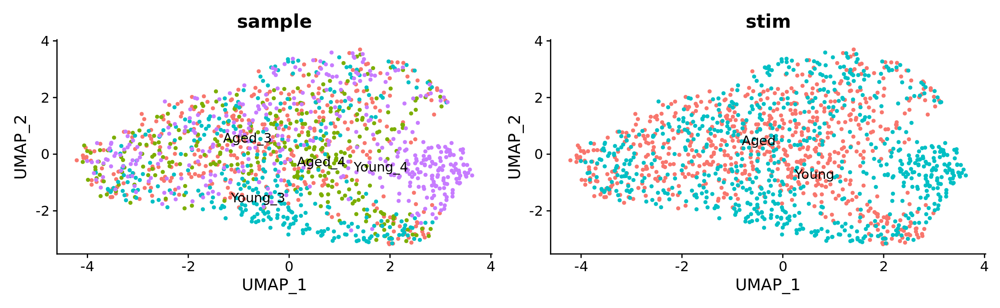
metadata <- combined_sct@meta.data
rownames(metadata) <- colnames(combined_sct)
ref.labels <- metadata$stim
library(mrtree)
resolutions <-
modularity_event_sampling(
A = combined_sct@graphs$integrated_snn,
n.res = 15,
gamma.min = 0.1,
gamma.max = 2
) # sample based on the similarity matrix
# clustering using Suerat
combined_sct <- combined_sct |>
FindClusters(algorithm = 4, method = "igraph",
resolution = resolutions, random.seed = reseed,
verbose = FALSE)
# initial cluster tree from Seurat flat clustering
plot_clustree(
labelmat = combined_sct@meta.data,
prefix = 'integrated_snn_res.',
ref.labels = ref.labels,
plot.ref = FALSE
)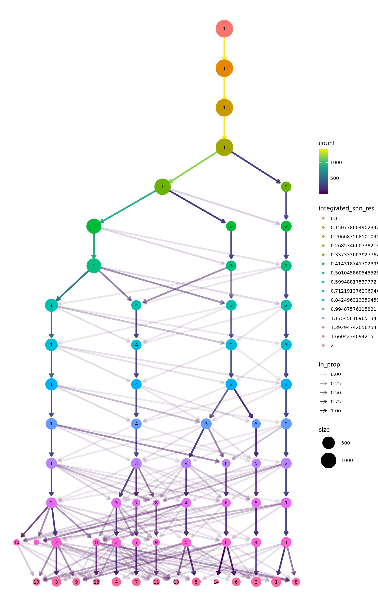
# Adjusted Multiresolution Rand Index (AMRI)
ks.flat <- apply(
out$labelmat.flat,
2,
FUN = function(x)
length(unique(x))
)
ks.mrtree <- apply(
out$labelmat.mrtree,
2,
FUN = function(x)
length(unique(x))
)
amri.flat <- sapply(1:ncol(out$labelmat.flat), function(i)
AMRI(out$labelmat.flat[, i], ref.labels)$amri)
amri.flat <- aggregate(amri.flat, by = list(k = ks.flat), FUN = mean)
amri.recon <- sapply(1:ncol(out$labelmat.mrtree), function(i)
AMRI(out$labelmat.mrtree[, i], ref.labels)$amri)
df <- rbind(
data.frame(
k = amri.flat$k,
amri = amri.flat$x,
method = 'Seurat flat'
),
data.frame(k = ks.mrtree, amri = amri.recon, method = 'MRtree')
)
ggplot2::ggplot(data = df, aes(x = k, y = amri, color = method)) + geom_line() + theme_bw()
stab.out <- stability_plot(out)
stab.out$plot
stab.out$df resolution ari
1 1 1.0000000
2 2 0.7523158
3 3 0.7107602
4 5 0.8777208
5 6 0.8648309
6 8 0.7898090
7 13 0.7361102
8 21 0.7480721resK <-
stab.out$df |>
as_tibble() |>
filter(ari != 1) |>
top_n(n = 1, wt = ari) |>
purrr::pluck(1)
resK[1] 5table(as.factor(out$labelmat.mrtree[, sprintf("K%s",resK)]))
1 2 3 4 5
421 449 281 154 132 combined_sct$k_tree <- as.factor(out$labelmat.mrtree[, sprintf("K%s",resK)])
p1 <- DimPlot(combined_sct, label = T, repel = T) + ggtitle("Unsupervised clustering") + NoLegend()
p2 <- DimPlot(combined_sct, label = T, repel = T, group.by = "k_tree") + ggtitle("MRTree") + NoLegend()
p1 | p2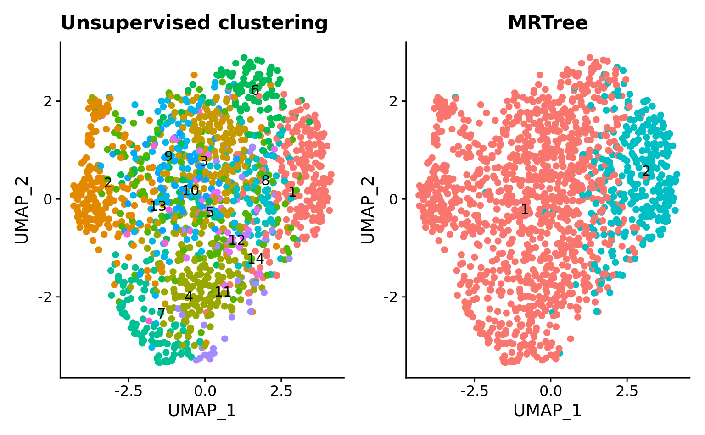
Idents(combined_sct) <- "k_tree"
combined_sct <-
PrepSCTFindMarkers(combined_sct, assay = "SCT")
srt.markers.roc <-
FindAllMarkers(
combined_sct,
assay = "SCT",
only.pos = TRUE,
min.diff.pct = 0.1,
logfc.threshold = 0.25,
test.use = "roc")
write_csv(srt.markers.roc,
here(tables_dir,
'novoseq-ageing_astr_recon-fix-mrk_roc-sct.csv'))
srt.markers.roc %>%
group_by(cluster) %>%
slice_max(n = 3, order_by = avg_log2FC)# A tibble: 2 × 8
# Groups: cluster [2]
myAUC avg_diff power avg_log2FC pct.1 pct.2 cluster gene
<dbl> <dbl> <dbl> <dbl> <dbl> <dbl> <fct> <chr>
1 0.738 0.601 0.476 0.867 0.651 0.206 3 Aldh1a1
2 0.727 0.578 0.454 0.833 0.805 0.504 4 Gpc6 srt.markers.lr <-
FindAllMarkers(
combined_sct,
assay = "SCT",
only.pos = TRUE,
min.diff.pct = 0.15,
logfc.threshold = 0.25,
test.use = "LR",
latent.vars = "sample")
readr::write_csv(srt.markers.lr,
here(tables_dir,
'novoseq-ageing_astr_recon-fix-mrk_logreg-sct.csv'))
srt.markers.lr %>%
group_by(cluster) %>%
slice_max(n = 3, order_by = avg_log2FC)# A tibble: 13 × 7
# Groups: cluster [5]
p_val avg_log2FC pct.1 pct.2 p_val_adj cluster gene
<dbl> <dbl> <dbl> <dbl> <dbl> <fct> <chr>
1 4.42e-20 0.484 0.798 0.639 4.91e-16 1 Lars2
2 3.50e-19 0.375 0.586 0.338 3.89e-15 2 Gm29683
3 2.86e-10 0.325 0.332 0.173 3.17e- 6 2 Sgcd
4 1.53e-12 0.304 0.318 0.153 1.69e- 8 2 Tshz2
5 6.11e-49 0.867 0.651 0.206 6.79e-45 3 Aldh1a1
6 2.95e-25 0.530 0.349 0.105 3.28e-21 3 Tafa1
7 1.68e-19 0.486 0.299 0.099 1.87e-15 3 Sntg1
8 5.14e-30 0.918 0.455 0.108 5.71e-26 4 Slc38a1
9 1.73e-24 0.906 0.571 0.204 1.92e-20 4 Slit2
10 1.13e-22 0.833 0.805 0.504 1.26e-18 4 Gpc6
11 6.77e- 7 0.369 0.841 0.555 7.52e- 3 5 Agt
12 3.65e- 4 0.307 0.659 0.465 1 e+ 0 5 Calm1
13 5.37e- 5 0.300 0.47 0.267 5.97e- 1 5 Tenm4 # srt.markers.mast <-
# FindAllMarkers(
# combined_sct,
# assay = "SCT",
# only.pos = TRUE,
# min.diff.pct = 0.15,
# logfc.threshold = 0.25,
# test.use = "MAST",
# latent.vars = "sample")
# readr::write_csv(srt.markers.mast,
# here(tables_dir,
# 'novoseq-ageing_astr_recon-fix-mrk_mast-sct.csv'))
# srt.markers.mast %>%
# group_by(cluster) %>%
# slice_max(n = 3, order_by = avg_log2FC)FeaturePlot(
combined_sct,
features = c("Apoe", "Gfap", "Slit2", "Aldh1a1",
"Tafa1", "Plcb1", "Sgcd", "Slc38a1",
"Fos", "Gja1", "Snap25", "Olig1",
"Per2", "Lars2", "Lxn", "Mfn2"),
min.cutoff = "q05", max.cutoff = "q95",
ncol = 4, order = TRUE
) +
patchwork::plot_annotation(
title = "Astro-Marker choice (integrated astrocytes from novoseq)",
theme = theme(plot.title = element_text(size = 22))
)
hypoth.nuclei.astro <- LoadH5Seurat(file = here(data_dir, "comb_astrocytes.bak.h5Seurat"))
DefaultAssay(hypoth.nuclei.astro) <- "SCT"
hypoth.nuclei.astro <-
hypoth.nuclei.astro |>
DietSeurat(assays = c("RNA", "SCT"))
hypoth.list <-
Seurat::SplitObject(
hypoth.nuclei.astro,
split.by = "Batch_ID")Arcuate nucleus
Campbell et al. 2017 Dropseq
hypoth.query.campbell_2017.1 <-
hypoth.list[["CampbellDropseq_batch_1"]]
hypoth.anchors.campbell_2017.1 <-
FindTransferAnchors(
reference = combined_sct,
query = hypoth.query.campbell_2017.1,
normalization.method = "SCT",
dims = 1:npcs,
k.anchor = 10,
k.score = 50,
k.filter = 100,
max.features = 500,
n.trees = 100,
reference.reduction = "pca")
predictions.campbell_2017.1 <-
TransferData(
anchorset = hypoth.anchors.campbell_2017.1,
refdata = combined_sct$k_tree,
dims = 1:npcs)
hypoth.query.campbell_2017.1 <-
MapQuery(
anchorset = hypoth.anchors.campbell_2017.1,
reference = combined_sct,
query = hypoth.query.campbell_2017.1,
refdata = list(k_tree = "k_tree"),
reference.reduction = "pca",
reduction.model = "umap")p1 <- DimPlot(combined_sct, reduction = "umap", group.by = "k_tree", label = TRUE, label.size = 3,
repel = TRUE) + NoLegend() + ggtitle("Reference annotations")
p.campbell_2017.1 <- DimPlot(hypoth.query.campbell_2017.1, reduction = "ref.umap", group.by = "predicted.k_tree", label = TRUE,
label.size = 3, repel = TRUE) + NoLegend() + ggtitle("Query transferred labels")
p1 + p.campbell_2017.1
Lutomska et al. 2017 Dropseq
hypoth.query.lutomska_2022.1 <-
hypoth.list[["Lutomska_chow_10xv3"]]
hypoth.anchors.lutomska_2022.1 <-
FindTransferAnchors(
reference = combined_sct,
query = hypoth.query.lutomska_2022.1,
normalization.method = "SCT",
dims = 1:npcs,
k.anchor = 10,
k.score = 50,
k.filter = 100,
max.features = 500,
n.trees = 100,
reference.reduction = "pca")
predictions.lutomska_2022.1 <-
TransferData(
anchorset = hypoth.anchors.lutomska_2022.1,
refdata = combined_sct$k_tree,
dims = 1:npcs)
hypoth.query.lutomska_2022.1 <-
MapQuery(
anchorset = hypoth.anchors.lutomska_2022.1,
reference = combined_sct,
query = hypoth.query.lutomska_2022.1,
refdata = list(k_tree = "k_tree"),
reference.reduction = "pca",
reduction.model = "umap")p.lutomska_2022.1 <-
DimPlot(
hypoth.query.lutomska_2022.1,
reduction = "ref.umap",
group.by = "predicted.k_tree",
label = TRUE,
label.size = 3,
repel = TRUE) +
NoLegend() +
ggtitle("Query transferred labels")
p1 + p.lutomska_2022.1
Deng et al. 2021 10xV3
hypoth.query.deng_2021.1 <-
hypoth.list[["Deng10xv3_536-1_chow-diet"]]
hypoth.anchors.deng_2021.1 <-
FindTransferAnchors(
reference = combined_sct,
query = hypoth.query.deng_2021.1,
normalization.method = "SCT",
dims = 1:npcs,
k.anchor = 10,
k.score = 50,
k.filter = 100,
max.features = 500,
n.trees = 100,
reference.reduction = "pca")
predictions.deng_2021.1 <-
TransferData(
anchorset = hypoth.anchors.deng_2021.1,
refdata = combined_sct$k_tree,
dims = 1:npcs)
hypoth.query.deng_2021.1 <-
MapQuery(
anchorset = hypoth.anchors.deng_2021.1,
reference = combined_sct,
query = hypoth.query.deng_2021.1,
refdata = list(k_tree = "k_tree"),
reference.reduction = "pca",
reduction.model = "umap")p.deng_2021.1 <-
DimPlot(
hypoth.query.deng_2021.1,
reduction = "ref.umap",
group.by = "predicted.k_tree",
label = TRUE,
label.size = 3,
repel = TRUE) +
NoLegend() +
ggtitle("Query transferred labels")
p1 + p.deng_2021.1
hypoth.query.deng_2021.3 <-
hypoth.list[["Deng10xv3_536-3_chow-diet"]]
hypoth.anchors.deng_2021.3 <-
FindTransferAnchors(
reference = combined_sct,
query = hypoth.query.deng_2021.3,
normalization.method = "SCT",
dims = 1:npcs,
k.anchor = 10,
k.score = 50,
k.filter = 100,
max.features = 500,
n.trees = 100,
reference.reduction = "pca")
predictions.deng_2021.3 <-
TransferData(
anchorset = hypoth.anchors.deng_2021.3,
refdata = combined_sct$k_tree,
dims = 1:npcs)
hypoth.query.deng_2021.3 <-
MapQuery(
anchorset = hypoth.anchors.deng_2021.3,
reference = combined_sct,
query = hypoth.query.deng_2021.3,
refdata = list(k_tree = "k_tree"),
reference.reduction = "pca",
reduction.model = "umap")p.deng_2021.3 <-
DimPlot(
hypoth.query.deng_2021.3,
reduction = "ref.umap",
group.by = "predicted.k_tree",
label = TRUE,
label.size = 3,
repel = TRUE) +
NoLegend() +
ggtitle("Query transferred labels")
p1 + p.deng_2021.3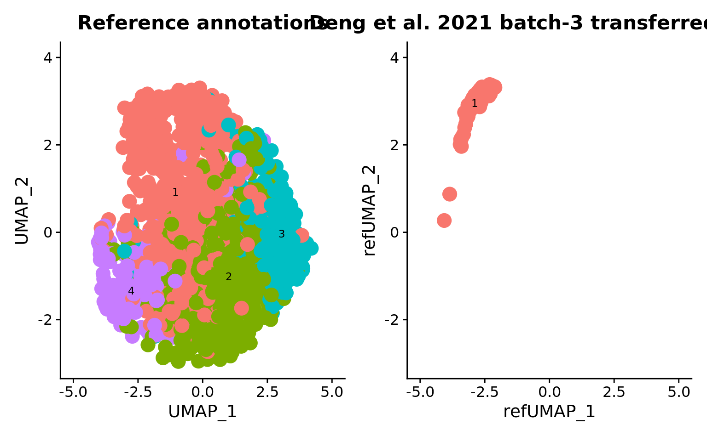
hypoth.query.deng_2021.5 <-
hypoth.list[["Deng10xv3_536-5_chow-diet"]]
hypoth.anchors.deng_2021.5 <-
FindTransferAnchors(
reference = combined_sct,
query = hypoth.query.deng_2021.5,
normalization.method = "SCT",
dims = 1:npcs,
k.anchor = 10,
k.score = 50,
k.filter = 100,
max.features = 500,
n.trees = 100,
reference.reduction = "pca")
predictions.deng_2021.5 <-
TransferData(
anchorset = hypoth.anchors.deng_2021.5,
refdata = combined_sct$k_tree,
dims = 1:npcs)
hypoth.query.deng_2021.5 <-
MapQuery(
anchorset = hypoth.anchors.deng_2021.5,
reference = combined_sct,
query = hypoth.query.deng_2021.5,
refdata = list(k_tree = "k_tree"),
reference.reduction = "pca",
reduction.model = "umap")p.deng_2021.5 <-
DimPlot(
hypoth.query.deng_2021.5,
reduction = "ref.umap",
group.by = "predicted.k_tree",
label = TRUE,
label.size = 3,
repel = TRUE) +
NoLegend() +
ggtitle("Query transferred labels")
p1 + p.deng_2021.5
Mediobasal hypothalamus
Rupp et al. 2021 10xV3
hypoth.query.rupp_2021.1 <-
hypoth.list[["Rupp10x_batch_1"]]
hypoth.anchors.rupp_2021.1 <-
FindTransferAnchors(
reference = combined_sct,
query = hypoth.query.rupp_2021.1,
normalization.method = "SCT",
dims = 1:npcs,
k.anchor = 10,
k.score = 50,
k.filter = 100,
max.features = 500,
n.trees = 100,
reference.reduction = "pca")
predictions.rupp_2021.1 <-
TransferData(
anchorset = hypoth.anchors.rupp_2021.1,
refdata = combined_sct$k_tree,
dims = 1:npcs)
hypoth.query.rupp_2021.1 <-
MapQuery(
anchorset = hypoth.anchors.rupp_2021.1,
reference = combined_sct,
query = hypoth.query.rupp_2021.1,
refdata = list(k_tree = "k_tree"),
reference.reduction = "pca",
reduction.model = "umap")p.rupp_2021.1 <-
DimPlot(
hypoth.query.rupp_2021.1,
reduction = "ref.umap",
group.by = "predicted.k_tree",
label = TRUE,
label.size = 3,
repel = TRUE) +
NoLegend() +
ggtitle("Query transferred labels")
p1 + p.rupp_2021.1
Ventromedial hypothalamus
Affinati et al. 2021 10xV3 nuclei
hypoth.query.affinati_2021.1 <-
hypoth.list[["Affinati10x_batch_1"]]
hypoth.anchors.affinati_2021.1 <-
FindTransferAnchors(
reference = combined_sct,
query = hypoth.query.affinati_2021.1,
normalization.method = "SCT",
dims = 1:npcs,
k.anchor = 10,
k.score = 50,
k.filter = 100,
max.features = 500,
n.trees = 100,
reference.reduction = "pca")
predictions.affinati_2021.1 <-
TransferData(
anchorset = hypoth.anchors.affinati_2021.1,
refdata = combined_sct$k_tree,
dims = 1:npcs)
hypoth.query.affinati_2021.1 <-
MapQuery(
anchorset = hypoth.anchors.affinati_2021.1,
reference = combined_sct,
query = hypoth.query.affinati_2021.1,
refdata = list(k_tree = "k_tree"),
reference.reduction = "pca",
reduction.model = "umap")p.affinati_2021.1 <-
DimPlot(
hypoth.query.affinati_2021.1,
reduction = "ref.umap",
group.by = "predicted.k_tree",
label = TRUE,
label.size = 3,
repel = TRUE) +
NoLegend() +
ggtitle("Query transferred labels")
p1 + p.affinati_2021.1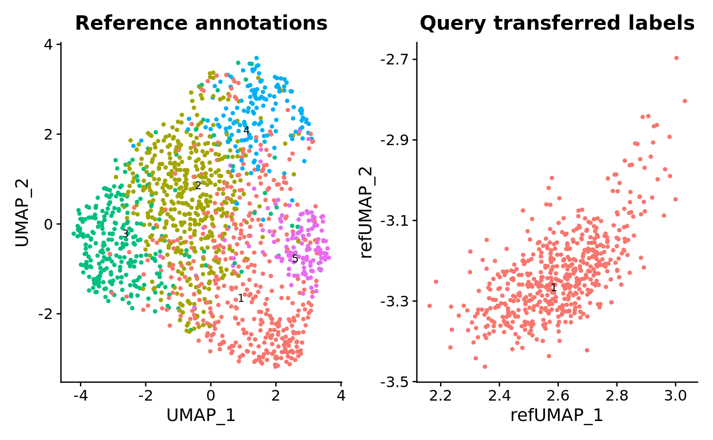
hypoth.query.affinati_2021.3 <-
hypoth.list[["Affinati10x_batch_3"]]
hypoth.anchors.affinati_2021.3 <-
FindTransferAnchors(
reference = combined_sct,
query = hypoth.query.affinati_2021.3,
normalization.method = "SCT",
dims = 1:npcs,
k.anchor = 10,
k.score = 50,
k.filter = 100,
max.features = 500,
n.trees = 100,
reference.reduction = "pca")
predictions.affinati_2021.3 <-
TransferData(
anchorset = hypoth.anchors.affinati_2021.3,
refdata = combined_sct$k_tree,
dims = 1:npcs)
hypoth.query.affinati_2021.3 <-
MapQuery(
anchorset = hypoth.anchors.affinati_2021.3,
reference = combined_sct,
query = hypoth.query.affinati_2021.3,
refdata = list(k_tree = "k_tree"),
reference.reduction = "pca",
reduction.model = "umap")p.affinati_2021.3 <-
DimPlot(
hypoth.query.affinati_2021.3,
reduction = "ref.umap",
group.by = "predicted.k_tree",
label = TRUE,
label.size = 3,
repel = TRUE) +
NoLegend() +
ggtitle("Query transferred labels")
p1 + p.affinati_2021.3
hypoth.query.affinati_2021.4 <-
hypoth.list[["Affinati10x_batch_4"]]
hypoth.anchors.affinati_2021.4 <-
FindTransferAnchors(
reference = combined_sct,
query = hypoth.query.affinati_2021.4,
normalization.method = "SCT",
dims = 1:npcs,
k.anchor = 10,
k.score = 50,
k.filter = 100,
max.features = 500,
n.trees = 100,
reference.reduction = "pca")
predictions.affinati_2021.4 <-
TransferData(
anchorset = hypoth.anchors.affinati_2021.4,
refdata = combined_sct$k_tree,
dims = 1:npcs)
hypoth.query.affinati_2021.4 <-
MapQuery(
anchorset = hypoth.anchors.affinati_2021.4,
reference = combined_sct,
query = hypoth.query.affinati_2021.4,
refdata = list(k_tree = "k_tree"),
reference.reduction = "pca",
reduction.model = "umap")p.affinati_2021.4 <-
DimPlot(
hypoth.query.affinati_2021.4,
reduction = "ref.umap",
group.by = "predicted.k_tree",
label = TRUE,
label.size = 3,
repel = TRUE) +
NoLegend() +
ggtitle("Query transferred labels")
p1 + p.affinati_2021.4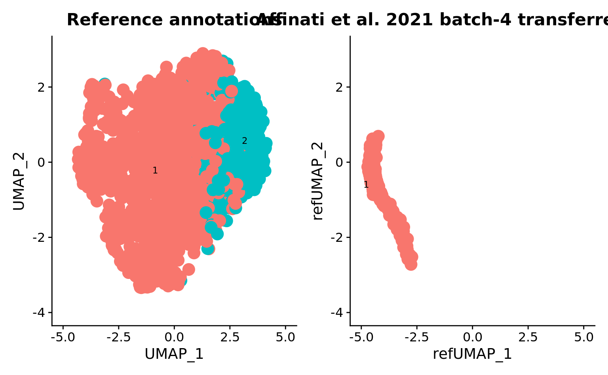
Kim et al. 2019 10xV2
hypoth.query.kim_2019.1 <-
hypoth.list[["Kim10x_batch_1"]]
hypoth.anchors.kim_2019.1 <-
FindTransferAnchors(
reference = combined_sct,
query = hypoth.query.kim_2019.1,
normalization.method = "SCT",
dims = 1:npcs,
k.anchor = 10,
k.score = 50,
k.filter = 100,
max.features = 500,
n.trees = 100,
reference.reduction = "pca")
predictions.kim_2019.1 <-
TransferData(
anchorset = hypoth.anchors.kim_2019.1,
refdata = combined_sct$k_tree,
dims = 1:npcs)
hypoth.query.kim_2019.1 <-
MapQuery(
anchorset = hypoth.anchors.kim_2019.1,
reference = combined_sct,
query = hypoth.query.kim_2019.1,
refdata = list(k_tree = "k_tree"),
reference.reduction = "pca",
reduction.model = "umap")p.kim_2019.1 <-
DimPlot(
hypoth.query.kim_2019.1,
reduction = "ref.umap",
group.by = "predicted.k_tree",
label = TRUE,
label.size = 3,
repel = TRUE) +
NoLegend() +
ggtitle("Query transferred labels")
p1 + p.kim_2019.1
Liu et al. 2022 10xV3
hypoth.query.liu_2022.1 <-
hypoth.list[["Anderson10x_batch_1"]]
hypoth.anchors.liu_2022.1 <-
FindTransferAnchors(
reference = combined_sct,
query = hypoth.query.liu_2022.1,
normalization.method = "SCT",
dims = 1:npcs,
k.anchor = 10,
k.score = 50,
k.filter = 100,
max.features = 500,
n.trees = 100,
reference.reduction = "pca")
predictions.liu_2022.1 <-
TransferData(
anchorset = hypoth.anchors.liu_2022.1,
refdata = combined_sct$k_tree,
dims = 1:npcs)
hypoth.query.liu_2022.1 <-
MapQuery(
anchorset = hypoth.anchors.liu_2022.1,
reference = combined_sct,
query = hypoth.query.liu_2022.1,
refdata = list(k_tree = "k_tree"),
reference.reduction = "pca",
reduction.model = "umap")p.liu_2022.1 <-
DimPlot(
hypoth.query.liu_2022.1,
reduction = "ref.umap",
group.by = "predicted.k_tree",
label = TRUE,
label.size = 3,
repel = TRUE) +
NoLegend() +
ggtitle("Query transferred labels")
p1 + p.affinati_2021.1
Ventroposterior hypothalamus
Mickelsen et al. 2020 10xV2
hypoth.query.mickelsen_2020.1 <-
hypoth.list[["Flynn10x_batch_1"]]
hypoth.anchors.mickelsen_2020.1 <-
FindTransferAnchors(
reference = combined_sct,
query = hypoth.query.mickelsen_2020.1,
normalization.method = "SCT",
dims = 1:npcs,
k.anchor = 10,
k.score = 50,
k.filter = 100,
max.features = 500,
n.trees = 100,
reference.reduction = "pca")
predictions.mickelsen_2020.1 <-
TransferData(
anchorset = hypoth.anchors.mickelsen_2020.1,
refdata = combined_sct$k_tree,
dims = 1:npcs)
hypoth.query.mickelsen_2020.1 <-
MapQuery(
anchorset = hypoth.anchors.mickelsen_2020.1,
reference = combined_sct,
query = hypoth.query.mickelsen_2020.1,
refdata = list(k_tree = "k_tree"),
reference.reduction = "pca",
reduction.model = "umap")p.mickelsen_2020.1 <-
DimPlot(
hypoth.query.mickelsen_2020.1,
reduction = "ref.umap",
group.by = "predicted.k_tree",
label = TRUE,
label.size = 3,
repel = TRUE) +
NoLegend() +
ggtitle("Query transferred labels")
p1 + p.mickelsen_2020.1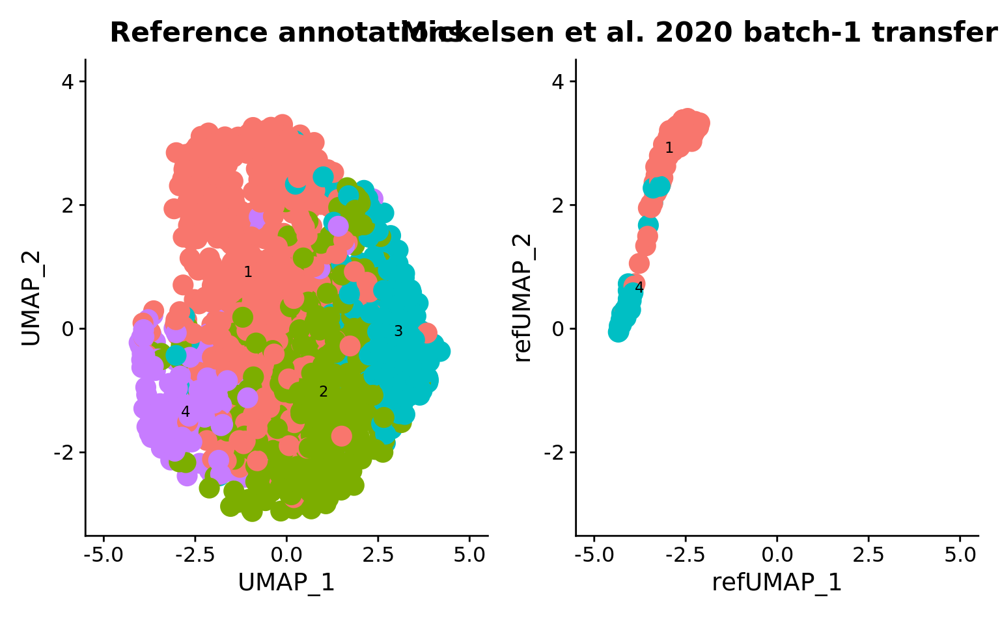
Preoptic area
Moffitt et al. 2018 10xV2
hypoth.query.moffitt_2018.1 <-
hypoth.list[["Moffit10x_batch_1"]]
hypoth.anchors.moffitt_2018.1 <-
FindTransferAnchors(
reference = combined_sct,
query = hypoth.query.moffitt_2018.1,
normalization.method = "SCT",
dims = 1:npcs,
k.anchor = 10,
k.score = 50,
k.filter = 100,
max.features = 500,
n.trees = 100,
reference.reduction = "pca")
predictions.moffitt_2018.1 <-
TransferData(
anchorset = hypoth.anchors.moffitt_2018.1,
refdata = combined_sct$k_tree,
dims = 1:npcs)
hypoth.query.moffitt_2018.1 <-
MapQuery(
anchorset = hypoth.anchors.moffitt_2018.1,
reference = combined_sct,
query = hypoth.query.moffitt_2018.1,
refdata = list(k_tree = "k_tree"),
reference.reduction = "pca",
reduction.model = "umap")p.moffitt_2018.1 <-
DimPlot(
hypoth.query.moffitt_2018.1,
reduction = "ref.umap",
group.by = "predicted.k_tree",
label = TRUE,
label.size = 3,
repel = TRUE) +
NoLegend() +
ggtitle("Query transferred labels")
p1 + p.moffitt_2018.1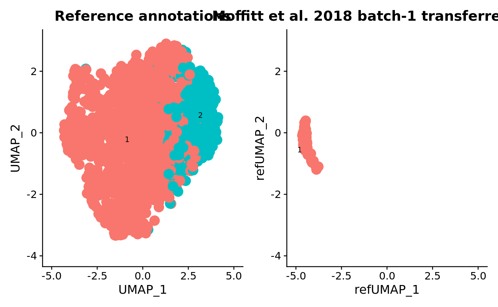
hypoth.query.moffitt_2018.2 <-
hypoth.list[["Moffit10x_batch_2"]]
hypoth.anchors.moffitt_2018.2 <-
FindTransferAnchors(
reference = combined_sct,
query = hypoth.query.moffitt_2018.2,
normalization.method = "SCT",
dims = 1:npcs,
k.anchor = 10,
k.score = 50,
k.filter = 100,
max.features = 500,
n.trees = 100,
reference.reduction = "pca")
predictions.moffitt_2018.2 <-
TransferData(
anchorset = hypoth.anchors.moffitt_2018.2,
refdata = combined_sct$k_tree,
dims = 1:npcs)
hypoth.query.moffitt_2018.2 <-
MapQuery(
anchorset = hypoth.anchors.moffitt_2018.2,
reference = combined_sct,
query = hypoth.query.moffitt_2018.2,
refdata = list(k_tree = "k_tree"),
reference.reduction = "pca",
reduction.model = "umap")p.moffitt_2018.2 <-
DimPlot(
hypoth.query.moffitt_2018.2,
reduction = "ref.umap",
group.by = "predicted.k_tree",
label = TRUE,
label.size = 3,
repel = TRUE) +
NoLegend() +
ggtitle("Query transferred labels")
p1 + p.moffitt_2018.2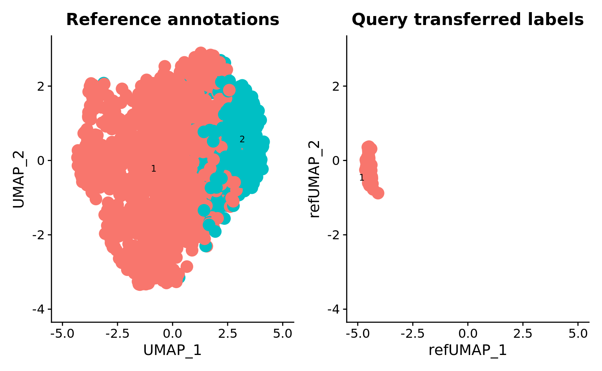
hypoth.query.moffitt_2018.3 <-
hypoth.list[["Moffit10x_batch_3"]]
hypoth.anchors.moffitt_2018.3 <-
FindTransferAnchors(
reference = combined_sct,
query = hypoth.query.moffitt_2018.3,
normalization.method = "SCT",
dims = 1:npcs,
k.anchor = 10,
k.score = 50,
k.filter = 100,
max.features = 500,
n.trees = 100,
reference.reduction = "pca")
predictions.moffitt_2018.3 <-
TransferData(
anchorset = hypoth.anchors.moffitt_2018.3,
refdata = combined_sct$k_tree,
dims = 1:npcs)
hypoth.query.moffitt_2018.3 <-
MapQuery(
anchorset = hypoth.anchors.moffitt_2018.3,
reference = combined_sct,
query = hypoth.query.moffitt_2018.3,
refdata = list(k_tree = "k_tree"),
reference.reduction = "pca",
reduction.model = "umap")p.moffitt_2018.3 <-
DimPlot(
hypoth.query.moffitt_2018.3,
reduction = "ref.umap",
group.by = "predicted.k_tree",
label = TRUE,
label.size = 3,
repel = TRUE) +
NoLegend() +
ggtitle("Query transferred labels")
p1 + p.moffitt_2018.3
Suprachiasmatic nucleus
Wen et al. 2020 10xV2
hypoth.query.wen_2020.1 <-
hypoth.list[["wen10x_batch_1"]]
hypoth.anchors.wen_2020.1 <-
FindTransferAnchors(
reference = combined_sct,
query = hypoth.query.wen_2020.1,
normalization.method = "SCT",
dims = 1:npcs,
k.anchor = 10,
k.score = 50,
k.filter = 100,
max.features = 500,
n.trees = 100,
reference.reduction = "pca")
predictions.wen_2020.1 <-
TransferData(
anchorset = hypoth.anchors.wen_2020.1,
refdata = combined_sct$k_tree,
dims = 1:npcs)
hypoth.query.wen_2020.1 <-
MapQuery(
anchorset = hypoth.anchors.wen_2020.1,
reference = combined_sct,
query = hypoth.query.wen_2020.1,
refdata = list(k_tree = "k_tree"),
reference.reduction = "pca",
reduction.model = "umap")p.wen_2020.1 <-
DimPlot(
hypoth.query.wen_2020.1,
reduction = "ref.umap",
group.by = "predicted.k_tree",
label = TRUE,
label.size = 3,
repel = TRUE) +
NoLegend() +
ggtitle("Query transferred labels")
p1 + p.wen_2020.1
Wen et al. 2020 Dropseq
hypoth.query.wen_2020.2 <-
hypoth.list[["wenDropseq_batch_1"]]
hypoth.anchors.wen_2020.2 <-
FindTransferAnchors(
reference = combined_sct,
query = hypoth.query.wen_2020.2,
normalization.method = "SCT",
dims = 1:npcs,
k.anchor = 10,
k.score = 50,
k.filter = 100,
max.features = 500,
n.trees = 100,
reference.reduction = "pca")
predictions.wen_2020.2 <-
TransferData(
anchorset = hypoth.anchors.wen_2020.2,
refdata = combined_sct$k_tree,
dims = 1:npcs)
hypoth.query.wen_2020.2 <-
MapQuery(
anchorset = hypoth.anchors.wen_2020.2,
reference = combined_sct,
query = hypoth.query.wen_2020.2,
refdata = list(k_tree = "k_tree"),
reference.reduction = "pca",
reduction.model = "umap")p.wen_2020.2 <-
DimPlot(
hypoth.query.wen_2020.2,
reduction = "ref.umap",
group.by = "predicted.k_tree",
label = TRUE,
label.size = 3,
repel = TRUE) +
NoLegend() +
ggtitle("Query transferred labels")
p1 + p.wen_2020.2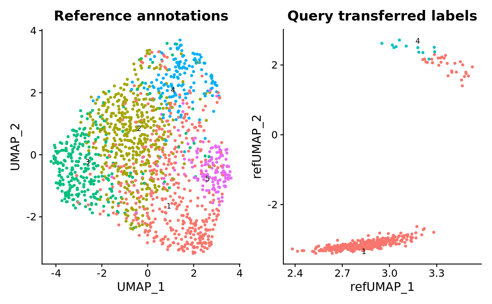
Morris et al. 2021 10xV3
hypoth.query.morris_2021.1 <-
hypoth.list[["Morris10x_batch_1"]]
hypoth.anchors.morris_2021.1 <-
FindTransferAnchors(
reference = combined_sct,
query = hypoth.query.morris_2021.1,
normalization.method = "SCT",
dims = 1:npcs,
k.anchor = 10,
k.score = 50,
k.filter = 100,
max.features = 500,
n.trees = 100,
reference.reduction = "pca")
predictions.morris_2021.1 <-
TransferData(
anchorset = hypoth.anchors.morris_2021.1,
refdata = combined_sct$k_tree,
dims = 1:npcs)
hypoth.query.morris_2021.1 <-
MapQuery(
anchorset = hypoth.anchors.morris_2021.1,
reference = combined_sct,
query = hypoth.query.morris_2021.1,
refdata = list(k_tree = "k_tree"),
reference.reduction = "pca",
reduction.model = "umap")p.morris_2021.1 <-
DimPlot(
hypoth.query.morris_2021.1,
reduction = "ref.umap",
group.by = "predicted.k_tree",
label = TRUE,
label.size = 3,
repel = TRUE) +
NoLegend() +
ggtitle("Query transferred labels")
p1 + p.morris_2021.1
hypoth.query.morris_2021.2 <-
hypoth.list[["Morris10x_batch_2"]]
hypoth.anchors.morris_2021.2 <-
FindTransferAnchors(
reference = combined_sct,
query = hypoth.query.morris_2021.2,
normalization.method = "SCT",
dims = 1:npcs,
k.anchor = 10,
k.score = 50,
k.filter = 100,
max.features = 500,
n.trees = 100,
reference.reduction = "pca")
predictions.morris_2021.2 <-
TransferData(
anchorset = hypoth.anchors.morris_2021.2,
refdata = combined_sct$k_tree,
dims = 1:npcs)
hypoth.query.morris_2021.2 <-
MapQuery(
anchorset = hypoth.anchors.morris_2021.2,
reference = combined_sct,
query = hypoth.query.morris_2021.2,
refdata = list(k_tree = "k_tree"),
reference.reduction = "pca",
reduction.model = "umap")p.morris_2021.2 <-
DimPlot(
hypoth.query.morris_2021.2,
reduction = "ref.umap",
group.by = "predicted.k_tree",
label = TRUE,
label.size = 3,
repel = TRUE) +
NoLegend() +
ggtitle("Query transferred labels")
p1 + p.morris_2021.2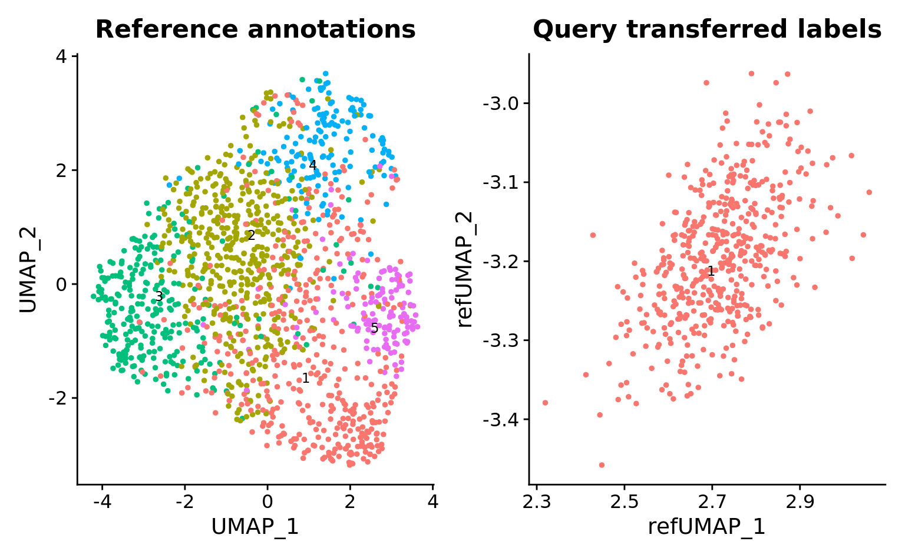
hypoth.query.morris_2021.3 <-
hypoth.list[["Morris10x_batch_3"]]
hypoth.anchors.morris_2021.3 <-
FindTransferAnchors(
reference = combined_sct,
query = hypoth.query.morris_2021.3,
normalization.method = "SCT",
dims = 1:npcs,
k.anchor = 10,
k.score = 50,
k.filter = 100,
max.features = 500,
n.trees = 100,
reference.reduction = "pca")
predictions.morris_2021.3 <-
TransferData(
anchorset = hypoth.anchors.morris_2021.3,
refdata = combined_sct$k_tree,
dims = 1:npcs)
hypoth.query.morris_2021.3 <-
MapQuery(
anchorset = hypoth.anchors.morris_2021.3,
reference = combined_sct,
query = hypoth.query.morris_2021.3,
refdata = list(k_tree = "k_tree"),
reference.reduction = "pca",
reduction.model = "umap")p.morris_2021.3 <-
DimPlot(
hypoth.query.morris_2021.3,
reduction = "ref.umap",
group.by = "predicted.k_tree",
label = TRUE,
label.size = 3,
repel = TRUE) +
NoLegend() +
ggtitle("Query transferred labels")
p1 + p.morris_2021.3
Lateral hypothalamic area
Mickelsen et al. 2019 10xV2
hypoth.query.mickelsen_2019.1 <-
hypoth.list[["Mickelsen10x_batch_1"]]
hypoth.anchors.mickelsen_2019.1 <-
FindTransferAnchors(
reference = combined_sct,
query = hypoth.query.mickelsen_2019.1,
normalization.method = "SCT",
dims = 1:npcs,
k.anchor = 10,
k.score = 50,
k.filter = 100,
max.features = 500,
n.trees = 100,
reference.reduction = "pca")
predictions.mickelsen_2019.1 <-
TransferData(
anchorset = hypoth.anchors.mickelsen_2019.1,
refdata = combined_sct$k_tree,
dims = 1:npcs)
hypoth.query.mickelsen_2019.1 <-
MapQuery(
anchorset = hypoth.anchors.mickelsen_2019.1,
reference = combined_sct,
query = hypoth.query.mickelsen_2019.1,
refdata = list(k_tree = "k_tree"),
reference.reduction = "pca",
reduction.model = "umap")p.mickelsen_2019.1 <-
DimPlot(
hypoth.query.mickelsen_2019.1,
reduction = "ref.umap",
group.by = "predicted.k_tree",
label = TRUE,
label.size = 3,
repel = TRUE) +
NoLegend() +
ggtitle("Query transferred labels")
p1 + p.mickelsen_2019.1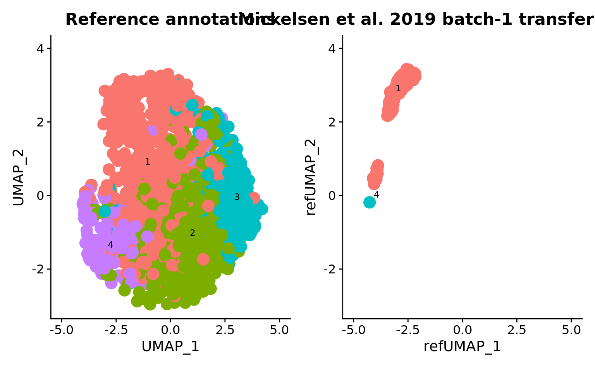
Rossi et al. 2019 Dropseq
hypoth.query.rossi_2019.1 <-
hypoth.list[["Mickelsen10x_batch_1"]]
hypoth.anchors.rossi_2019.1 <-
FindTransferAnchors(
reference = combined_sct,
query = hypoth.query.rossi_2019.1,
normalization.method = "SCT",
dims = 1:npcs,
k.anchor = 10,
k.score = 50,
k.filter = 100,
max.features = 500,
n.trees = 100,
reference.reduction = "pca")
predictions.rossi_2019.1 <-
TransferData(
anchorset = hypoth.anchors.rossi_2019.1,
refdata = combined_sct$k_tree,
dims = 1:npcs)
hypoth.query.rossi_2019.1 <-
MapQuery(
anchorset = hypoth.anchors.rossi_2019.1,
reference = combined_sct,
query = hypoth.query.rossi_2019.1,
refdata = list(k_tree = "k_tree"),
reference.reduction = "pca",
reduction.model = "umap")p.rossi_2019.1 <-
DimPlot(
hypoth.query.rossi_2019.1,
reduction = "ref.umap",
group.by = "predicted.k_tree",
label = TRUE,
label.size = 3,
repel = TRUE) +
NoLegend() +
ggtitle("Query transferred labels")
p1 + p.rossi_2019.1
Paraventricular nucleus
# hypoth.query.rupp_2021.1 <-
# hypoth.list[["Rupp10x_batch_1"]]
# hypoth.anchors.rupp_2021.1 <-
# FindTransferAnchors(
# reference = combined_sct,
# query = hypoth.query.rupp_2021.1,
# normalization.method = "SCT",
# dims = 1:npcs,
# k.anchor = 10,
# k.score = 50,
# k.filter = 100,
# max.features = 500,
# n.trees = 100,
# reference.reduction = "pca")
#
# predictions.rupp_2021.1 <-
# TransferData(
# anchorset = hypoth.anchors.rupp_2021.1,
# refdata = combined_sct$k_tree,
# dims = 1:npcs)
#
# hypoth.query.rupp_2021.1 <-
# MapQuery(
# anchorset = hypoth.anchors.rupp_2021.1,
# reference = combined_sct,
# query = hypoth.query.rupp_2021.1,
# refdata = list(k_tree = "k_tree"),
# reference.reduction = "pca",
# reduction.model = "umap")# p.rupp_2021.1 <-
# DimPlot(
# hypoth.query.rupp_2021.1,
# reduction = "ref.umap",
# group.by = "predicted.k_tree",
# label = TRUE,
# label.size = 3,
# repel = TRUE) +
# NoLegend() +
# ggtitle("Query transferred labels")
#
# p1 + p.rupp_2021.1
sessionInfo()R version 4.2.2 (2022-10-31)
Platform: x86_64-pc-linux-gnu (64-bit)
Running under: Ubuntu 22.04.1 LTS
Matrix products: default
BLAS: /usr/lib/x86_64-linux-gnu/openblas-pthread/libblas.so.3
LAPACK: /usr/lib/x86_64-linux-gnu/openblas-pthread/libopenblasp-r0.3.20.so
locale:
[1] LC_CTYPE=en_US.UTF-8 LC_NUMERIC=C
[3] LC_TIME=en_US.UTF-8 LC_COLLATE=en_US.UTF-8
[5] LC_MONETARY=en_US.UTF-8 LC_MESSAGES=en_US.UTF-8
[7] LC_PAPER=en_US.UTF-8 LC_NAME=C
[9] LC_ADDRESS=C LC_TELEPHONE=C
[11] LC_MEASUREMENT=en_US.UTF-8 LC_IDENTIFICATION=C
attached base packages:
[1] stats graphics grDevices utils datasets methods
[7] base
other attached packages:
[1] ggraph_2.1.0.9000 mrtree_0.0.0.9000
[3] RobustRankAggreg_1.2.1 biomaRt_2.54.0
[5] scCustomize_1.0.2 Scillus_0.5.0
[7] Nebulosa_1.8.0 ggplot2_3.4.0
[9] swne_0.6.20 patchwork_1.1.2.9000
[11] UpSetR_1.4.0 SeuratDisk_0.0.0.9020
[13] SeuratWrappers_0.3.1 SeuratObject_4.1.3
[15] Seurat_4.3.0 reticulate_1.26
[17] kableExtra_1.3.4 future_1.29.0
[19] skimr_2.1.4 stringr_1.5.0.9000
[21] magrittr_2.0.3 dplyr_1.0.10
[23] purrr_0.3.5 readr_2.1.3
[25] here_1.0.1 workflowr_1.7.0
loaded via a namespace (and not attached):
[1] rsvd_1.0.5 ica_1.0-3
[3] svglite_2.1.0 ps_1.7.2
[5] foreach_1.5.2 lmtest_0.9-40
[7] rprojroot_2.0.3 crayon_1.5.2
[9] MASS_7.3-58.1 nlme_3.1-160
[11] backports_1.4.1 rlang_1.0.6
[13] XVector_0.38.0 ROCR_1.0-11
[15] irlba_2.3.5.1 callr_3.7.3
[17] limma_3.54.0 filelock_1.0.2
[19] data.tree_1.0.0 rjson_0.2.21
[21] bit64_4.0.5 glue_1.6.2
[23] sctransform_0.3.5 parallel_4.2.2
[25] processx_3.8.0 vipor_0.4.5
[27] spatstat.sparse_3.0-0 AnnotationDbi_1.60.0
[29] BiocGenerics_0.44.0 spatstat.geom_3.0-3
[31] tidyselect_1.2.0 SummarizedExperiment_1.28.0
[33] liger_2.0.1 fitdistrplus_1.1-8
[35] XML_3.99-0.13 tidyr_1.2.1.9001
[37] zoo_1.8-11 ggpubr_0.5.0.999
[39] xtable_1.8-4 formattable_0.2.1
[41] evaluate_0.18 cli_3.4.1
[43] zlibbioc_1.44.0 rstudioapi_0.14
[45] miniUI_0.1.1.1 sp_1.5-1
[47] whisker_0.4.1 bslib_0.4.1
[49] fastmatch_1.1-3 treeio_1.23.0
[51] maps_3.4.1 shiny_1.7.3
[53] xfun_0.35 askpass_1.1
[55] clue_0.3-63 usedist_0.4.0
[57] cluster_2.1.4 tidygraph_1.2.2
[59] clusterGeneration_1.3.7 KEGGREST_1.38.0
[61] expm_0.999-6 SymSim_0.0.0.9000
[63] tibble_3.1.8 ggrepel_0.9.2.9999
[65] ape_5.6-2 dendextend_1.16.0
[67] listenv_0.8.0 Biostrings_2.66.0
[69] png_0.1-8 withr_2.5.0
[71] ggforce_0.4.1 bitops_1.0-7
[73] plyr_1.8.8 coda_0.19-4
[75] pracma_2.4.2 pillar_1.8.1
[77] GlobalOptions_0.1.2 cachem_1.0.6
[79] fs_1.5.2 scatterplot3d_0.3-42
[81] hdf5r_1.3.7 GetoptLong_1.0.5
[83] paletteer_1.5.0 vctrs_0.5.1
[85] ellipsis_0.3.2 generics_0.1.3
[87] tools_4.2.2 beeswarm_0.4.0
[89] tweenr_2.0.2 munsell_0.5.0
[91] proxy_0.4-27 DelayedArray_0.24.0
[93] fastmap_1.1.0 compiler_4.2.2
[95] abind_1.4-5 httpuv_1.6.6
[97] ggimage_0.3.1 plotly_4.10.1
[99] GenomeInfoDbData_1.2.9 gridExtra_2.3
[101] colorway_0.2.0 lattice_0.20-45
[103] deldir_1.0-6 snow_0.4-4
[105] utf8_1.2.2 later_1.3.0
[107] BiocFileCache_2.6.0 jsonlite_1.8.4
[109] scales_1.2.1 tidytree_0.4.1
[111] pbapply_1.6-0 carData_3.0-5
[113] lazyeval_0.2.2 promises_1.2.0.1
[115] car_3.1-1 doParallel_1.0.17
[117] R.utils_2.12.2 goftest_1.2-3
[119] checkmate_2.1.0 spatstat.utils_3.0-1
[121] rmarkdown_2.18 cowplot_1.1.1
[123] textshaping_0.3.6 webshot_0.5.4
[125] Rtsne_0.16 glmGamPoi_1.10.0
[127] forcats_0.5.2 Biobase_2.58.0
[129] uwot_0.1.14 igraph_1.3.5
[131] plotrix_3.8-2 numDeriv_2016.8-1.1
[133] survival_3.4-0 yaml_2.3.6
[135] systemfonts_1.0.4 htmltools_0.5.4
[137] memoise_2.0.1 graphlayouts_0.8.4
[139] quadprog_1.5-8 IRanges_2.32.0
[141] viridisLite_0.4.1 digest_0.6.31
[143] assertthat_0.2.1 mime_0.12
[145] rappdirs_0.3.3 repr_1.1.4
[147] RSQLite_2.2.19 yulab.utils_0.0.5
[149] future.apply_1.10.0 ggmin_0.0.0.9000
[151] remotes_2.4.2 data.table_1.14.6
[153] blob_1.2.3 S4Vectors_0.36.1
[155] R.oo_1.25.0 ragg_1.2.4
[157] splines_4.2.2 labeling_0.4.2
[159] rematch2_2.1.2 RCurl_1.98-1.9
[161] broom_1.0.1 ks_1.14.0
[163] hms_1.1.2 colorspace_2.0-3
[165] base64enc_0.1-3 mnormt_2.1.1
[167] BiocManager_1.30.19 ggbeeswarm_0.6.0
[169] GenomicRanges_1.30.3 shape_1.4.6
[171] aplot_0.1.9 sass_0.4.4
[173] Rcpp_1.0.9 mclust_6.0.0
[175] RANN_2.6.1 mvtnorm_1.1-3
[177] circlize_0.4.15 NNLM_0.4.4
[179] fansi_1.0.3 tzdb_0.3.0
[181] parallelly_1.32.1 R6_2.5.1
[183] grid_4.2.2 phytools_1.2-0
[185] ggridges_0.5.4 lifecycle_1.0.3
[187] curl_4.3.3 ggsignif_0.6.4
[189] phangorn_2.10.0 leiden_0.4.3
[191] jquerylib_0.1.4 snakecase_0.11.0
[193] Matrix_1.5-3 RcppAnnoy_0.0.20
[195] RColorBrewer_1.1-3 iterators_1.0.14
[197] spatstat.explore_3.0-5 htmlwidgets_1.5.4
[199] umap_0.2.9.0 polyclip_1.10-4
[201] gridGraphics_0.5-1 timechange_0.1.1
[203] optimParallel_1.0-2 rvest_1.0.3
[205] ComplexHeatmap_2.14.0 mgcv_1.8-41
[207] globals_0.16.2 openssl_2.0.5
[209] spatstat.random_3.0-1 progressr_0.12.0
[211] codetools_0.2-18 matrixStats_0.63.0
[213] lubridate_1.9.0 FNN_1.1.3.1
[215] getPass_0.2-2 prettyunits_1.1.1
[217] SingleCellExperiment_1.20.0 dbplyr_2.2.1
[219] RSpectra_0.16-1 R.methodsS3_1.8.2
[221] GenomeInfoDb_1.34.4 gtable_0.3.1
[223] DBI_1.1.3 git2r_0.30.1
[225] stats4_4.2.2 ggfun_0.0.9
[227] tensor_1.5 httr_1.4.4
[229] highr_0.9 KernSmooth_2.23-20
[231] stringi_1.7.8 vroom_1.6.0
[233] progress_1.2.2 reshape2_1.4.4
[235] farver_2.1.1 viridis_0.6.2
[237] ggtree_3.7.1.002 magick_2.7.3
[239] combinat_0.0-8 xml2_1.3.3
[241] ggplotify_0.1.0 scattermore_0.8
[243] bit_4.0.5 clustree_0.5.0
[245] MatrixGenerics_1.10.0 spatstat.data_3.0-0
[247] janitor_2.1.0.9000 pkgconfig_2.0.3
[249] ggprism_1.0.4 rstatix_0.7.1.999
[251] knitr_1.41